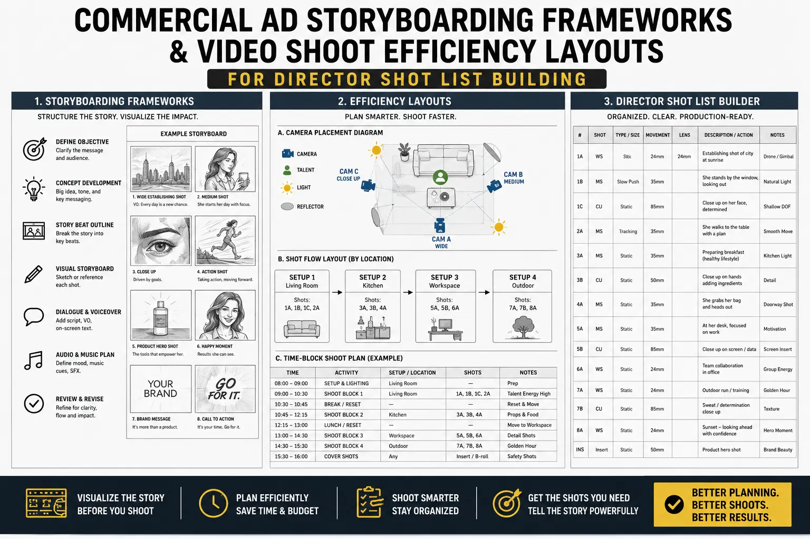
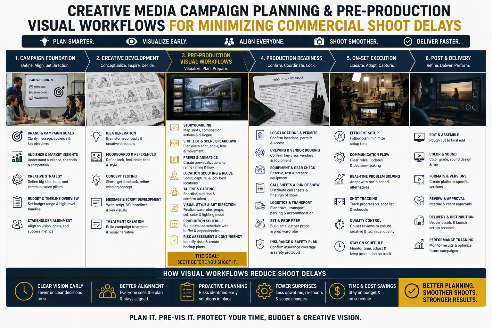

How Advanced Director Pre-Visualization Eliminates Production Errors on Location
The Most Expensive Mistakes Are Made Before the Camera Rolls
The production day is the most expensive day in any commercial video project — every crew member, every piece of equipment, every location permit, every talent fee is running simultaneously on the clock. And yet, on the majority of commercial shoots, a significant percentage of this expensive production time is consumed not by filming but by problem-solving: the director discovering that a planned camera angle does not work from the actual location, the cinematographer realising that the natural light contradicts the planned lighting setup, the production team discovering that a shot sequence that works in the storyboard is physically impossible in the available space, the art department recognising that the colour palette chosen for the set conflicts with the product's visual identity.
Every one of these problems has a common origin: insufficient pre-visualization. They are not creative failures or technical incompetence — they are planning gaps that could have been identified and resolved days or weeks before the production day, at a fraction of the cost, with none of the cascading schedule disruption that on-location problem-solving creates.
Director pre-visualization strategy — the systematic, detailed visual planning of every shot, every setup, every transition, and every technical requirement before the production day — is the single most effective tool for eliminating production errors, reducing shoot-day waste, and ensuring that the expensive hours on location are spent capturing content rather than solving problems.
Commercial Ad Storyboarding Frameworks: The Foundation of Pre-Visualization
Commercial ad storyboarding frameworks provide the structural foundation for all subsequent pre-visualization work — translating the creative concept from words and ideas into a visual sequence that the entire production team can reference, discuss, and refine before committing resources to production.
- Frame-by-frame visual narrative. A professional storyboard breaks the commercial into individual frames — each representing a key visual moment in the film — arranged in sequential order with annotations describing camera movement, subject action, dialogue or voiceover, sound design, and transition to the next frame. The storyboard serves as the shared visual reference that aligns the director's vision with the understanding of every department: cinematography, lighting, art direction, styling, talent performance, and post-production. Without this shared reference, each department works from their own interpretation of the creative brief — and interpretive differences between departments are the primary source of on-location conflicts and delays.
- Composition and framing specification. Each storyboard frame specifies the compositional approach for the shot — the position of the subject within the frame, the depth of field, the camera height and angle, the relationship between foreground and background elements, and the visual weight distribution that creates the intended emotional effect. These compositional specifications guide the cinematographer's lens selection, camera positioning, and depth-of-field decisions — ensuring that the camera department arrives on location with the correct equipment and a clear understanding of what each shot requires.
- Transition and edit continuity planning. The storyboard also serves as the first edit — showing how shots connect to each other through cuts, dissolves, or in-camera transitions, and ensuring that the visual continuity between shots is planned rather than hoped for. Mapping out ad film frames in sequential order reveals continuity issues (a subject facing left in one shot and right in the next, a lighting direction change that will feel jarring in the edit) that are invisible when shots are planned individually rather than in sequence.
- Client approval and creative alignment. The storyboard is the primary tool for securing client approval of the creative direction before production resources are committed. A client who approves a detailed storyboard has seen — and agreed to — the visual approach, the narrative structure, the compositional style, and the editorial rhythm of the film. This pre-production approval dramatically reduces the risk of post-production revision requests that arise when the client's expectations diverge from the director's interpretation of the creative brief.
Error Prevention
Pre-visualization identifies and resolves technical, logistical, and creative problems before the production day — when solutions cost time and attention rather than expensive crew hours, equipment downtime, and schedule disruption.
Schedule Efficiency
A thoroughly pre-visualized shoot executes faster because every decision has been pre-made — the crew sets up for each shot without waiting for directorial decisions, and the production manager can sequence setups for maximum efficiency based on complete advance knowledge of the day's requirements.
Budget Protection
Every hour of location time saved through pre-visualization is an hour of crew, equipment, and location costs saved. Pre-visualization routinely reduces required shoot days, overtime hours, and post-production correction costs — delivering the same or better creative output at lower total production cost.
Creative Quality
When the production team is not spending location time solving planning problems, they spend it refining creative execution — adjusting performance, perfecting timing, exploring creative variations. Pre-visualization does not constrain creativity; it creates the time and space for creativity to flourish on set.

Director Shot List Building: The Operational Blueprint
Director shot list building translates the storyboard's visual narrative into an operational production document — a detailed, sequenced list of every shot to be captured, with the technical specifications, setup requirements, and scheduling information the crew needs to execute each shot efficiently.
- Technical specification per shot. Each entry in the shot list specifies: shot number (corresponding to the storyboard frame), shot type (wide, medium, close-up, detail, aerial), camera position and height, lens focal length, camera movement type and speed, depth of field requirements, lighting setup reference, audio requirements, talent blocking, props and styling elements, and estimated setup time and take count. This level of specification eliminates the on-set conversation of "what do we need for this shot?" — because every answer is pre-determined.
- Setup-optimised sequencing. The shot list is sequenced not by narrative order but by setup efficiency — grouping shots that share the same camera position, lighting setup, or location area together so that the crew can capture multiple shots from a single setup before moving to the next. This setup-optimised sequencing — one of the most effective video shoot efficiency layouts available — routinely saves 20–40% of production time compared to narrative-order shooting, because it minimises the number of complete setup changes required during the production day.
- Time allocation and schedule building. Each shot in the list includes a time allocation — the estimated minutes required for setup, rehearsal, and capture — that enables the production manager to build a detailed production schedule with realistic time expectations. This schedule serves as the real-time monitoring tool during the shoot: if a shot is taking longer than allocated, the production manager can identify the overrun immediately and make informed decisions about schedule adjustments — rather than discovering at 5pm that the final three shots cannot be completed because earlier shots consumed more time than anyone anticipated.
- Contingency and priority flagging. The shot list flags each shot with a priority level — essential (must capture), important (should capture if time allows), and bonus (desirable but not critical) — enabling the production manager to make intelligent triage decisions if the schedule falls behind. Minimizing commercial shoot delays is not just about preventing problems — it is also about having a clear decision framework for managing problems when they occur, ensuring that schedule pressure results in the loss of lowest-priority content rather than random omissions.
Video Shoot Efficiency Layouts: Optimising the Physical Production
Video shoot efficiency layouts extend pre-visualization beyond the creative plan into the physical organisation of the production space — mapping camera positions, lighting placements, equipment staging areas, and crew movement patterns to optimise the physical flow of production.
Floor Plan Mapping
- Scale floor plans of the location with marked camera positions for each shot
- Lighting placement diagrams showing fixture positions, power routing, and modification equipment
- Talent blocking maps showing subject positions and movement paths for each shot
- Equipment staging areas positioned to minimise setup time between consecutive shots
Setup Sequence Optimisation
- Grouped shots by camera position to minimise physical camera relocations
- Lighting pre-rig schedules that prepare upcoming setups while current shots are being filmed
- Parallel preparation workflows: styling, props, and talent ready for the next setup during current capture
- Location movement plans that minimise crew transit time between shooting areas
Environmental Planning
- Natural light tracking: sun position and shadow mapping for each hour of the shoot day
- Weather contingency plans with alternative setups for each weather scenario
- Sound environment assessment: identifying noise sources and planning around them
- Power availability mapping: generator positions, cable routing, and circuit load planning
Creative Media Campaign Planning: Aligning Pre-Vis with Strategy
Creative media campaign planning connects the director's pre-visualization with the broader campaign strategy — ensuring that the production plan delivers content that serves the campaign's platform requirements, audience targeting, and format specifications.
- Multi-format pre-visualization. Modern commercial campaigns require content in multiple formats — horizontal 16:9 for YouTube and television, vertical 9:16 for Instagram Reels and TikTok, square 1:1 for feed posts, and various aspect ratios for display advertising. Pre-production visual workflows should pre-visualize each shot in all required formats, identifying framing adjustments needed for each aspect ratio and ensuring that the composition works across all deliverable formats rather than relying on post-production cropping that may compromise the visual quality of non-primary formats.
- Platform-specific edit planning. Different platforms require different edit pacing, different opening hooks, and different narrative structures. The pre-visualization should include platform-specific animatics that show how the captured footage will be edited for each platform — ensuring that the shot list includes the specific shots, angles, and durations needed for each platform's edit rather than assuming that a single set of footage can be repurposed for all platforms without specific planning.
- A/B test variant planning. If the campaign strategy includes A/B testing of creative variants (different openings, different product shots, different calls to action), these variants should be pre-visualized and included in the shot list as planned captures rather than afterthought additions. Planning test variants in pre-production ensures they receive the same creative quality and production attention as the primary content.
- Post-production pipeline planning. The pre-visualization informs the post-production pipeline — identifying which shots require VFX work, colour grading complexity, compositing, motion graphics integration, or sound design that must be budgeted and scheduled. Digital ad video production setup that plans the post-production pipeline during pre-visualization avoids the post-production surprises that arise when production delivers footage requiring capabilities or timelines that were not anticipated.

Pre-Production Visual Workflows: The Modern Tool Stack
Pre-production visual workflows in 2026 use a combination of traditional techniques and digital tools that enable increasingly precise and communicative pre-visualization.
- Digital storyboarding tools. Tools like FrameForge, Storyboarder, and Boords provide specialised storyboarding environments with built-in character libraries, virtual camera controls, and collaboration features that enable rapid iteration on the visual plan. These tools produce storyboards that can be shared digitally with the entire production team and client stakeholders for review and approval.
- Real-time 3D pre-visualization. Unreal Engine and Blender are increasingly used for commercial pre-visualization — building virtual versions of the shooting environment with accurate dimensions, virtual camera models that replicate the behaviour of specific cinema lenses, and virtual lighting that approximates the planned lighting setup. This 3D pre-vis produces animated previews that show camera movements, lens behaviour, and spatial relationships with a fidelity that hand-drawn storyboards cannot approach.
- Location survey and sun tracking tools. PhotoPills and Sun Seeker provide precise sun position tracking for any location, date, and time — enabling the cinematographer to plan natural light setups based on the exact sun position at the planned shooting time rather than estimating from memory or experience. Google Earth and drone survey photography provide aerial perspectives of locations that inform camera placement, movement paths, and spatial planning.
- Collaborative production management platforms. Tools like StudioBinder, SetHero, and Yamdu integrate shot lists, storyboards, call sheets, schedules, and production documents into unified platforms that keep the entire production team aligned on the current plan — eliminating the version-control problems and communication gaps that arise when production documents are distributed as individual files across email and messaging platforms.
Minimizing Commercial Shoot Delays: The Risk Mitigation Framework
Minimizing commercial shoot delays requires a risk mitigation approach that identifies potential delay sources in pre-production and develops contingency plans for each.
- Weather contingency planning. For location shoots, the pre-visualization should include alternative setups for each weather scenario — identifying which shots can be captured in overcast conditions, which require direct sunlight, which can be moved to covered areas, and which require rescheduling. This weather planning prevents the paralysis that occurs when the crew arrives at a location to find weather conditions that invalidate the planned setups and no alternative has been prepared.
- Equipment redundancy planning. The pre-visualization identifies the critical equipment for each shot — and the production plan should include backup equipment for any item whose failure would halt production. A second camera body, a backup lens for the most-used focal length, a redundant power source, and spare media are standard equipment insurance that prevents equipment failures from becoming production shutdowns.
- Schedule buffer allocation. The production schedule should include built-in buffer time — typically 10–15% of the total scheduled time — distributed at strategic points throughout the day to absorb the minor overruns that are inevitable in any production. This buffer is not wasted time — it is insurance against the cascading schedule collapse that occurs when a schedule with no margin encounters its first delay.
- Communication protocols for real-time schedule management. The production plan should establish clear communication protocols for managing the schedule in real time — who has authority to call a shot complete, who decides when to move to the next setup, and how the production manager communicates schedule status to the director and department heads. Clear protocols prevent the decision paralysis and conflicting priorities that waste time when multiple stakeholders have different opinions about schedule management.
Conclusion
Director pre-visualization strategy, commercial ad storyboarding frameworks, video shoot efficiency layouts, director shot list building, and pre-production visual workflows are the planning disciplines that transform a commercial production from an expensive exercise in real-time problem-solving into a precisely executed creative operation — where every decision is pre-made, every problem is pre-solved, and every minute of expensive location time is spent capturing content rather than discovering what should have been captured.
The commercial mathematics are straightforward: pre-production planning time costs a fraction of production time. Every problem solved in pre-visualization is a problem that does not consume location hours, crew overtime, or post-production correction. Minimizing commercial shoot delays through thorough creative media campaign planning and mapping out ad film frames is not a creative luxury — it is the highest-return investment available in any production budget.
At The PhD Ads in Madurai, we apply director pre-visualization strategy, commercial ad storyboarding frameworks, and pre-production visual workflows to every commercial production — ensuring that your production day delivers maximum creative output with minimum waste, delay, and on-location problem-solving. Digital ad video production setup that plans for precision and executes with confidence.
Key Topics
Ready to Eliminate Production Errors Before They Happen?
At The PhD Ads in Madurai, we apply director pre-visualization strategy, commercial ad storyboarding frameworks, and pre-production visual workflows to every commercial production — ensuring your shoot day delivers maximum creative output with zero planning-preventable delays.
Email: team@e2o.in